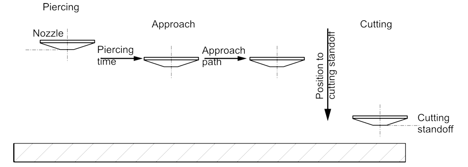
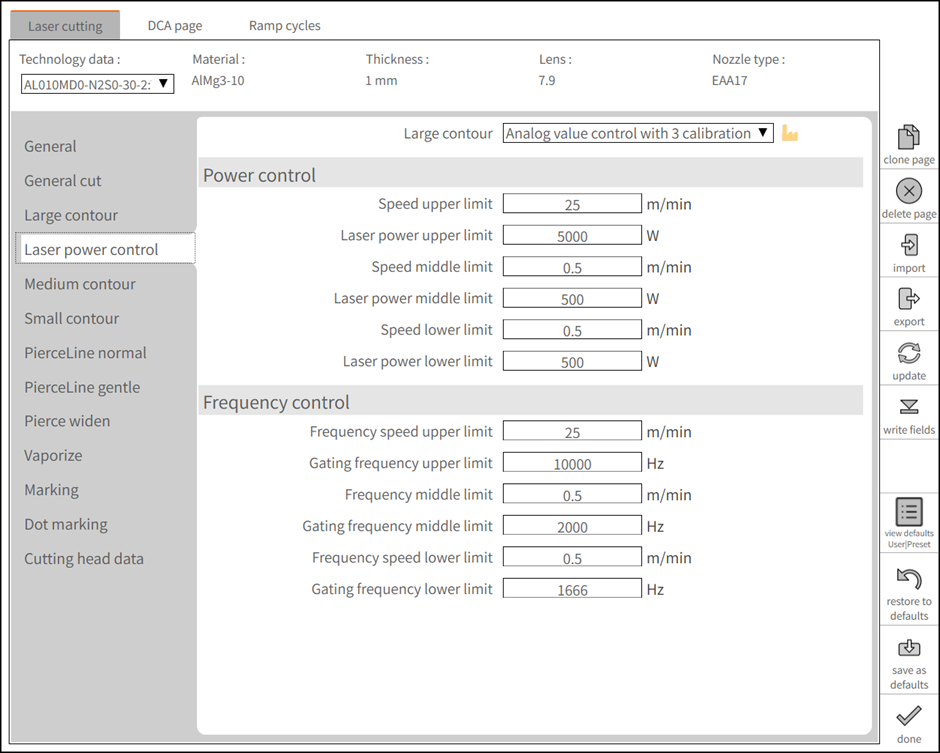

Cutting
Approach strategies
In order to avoid damage to the contour from piercing, the material is pierced a few millimeters to one side of the contour. The contour is then approached using various strategies depending on the material, the material thickness and the contour size.
Normal approach
With a normal approach, cutting takes place straight from the start hole with the cutting parameters from the appropriate cutting table.
Reduced approaching
The contour is approached at a reduced speed. Power, frequency, nozzle distance.

Approach with pre-cut
After piercing, a cut of a few millimeters is made at reduced speed, depending on material thickness. The cutting head then returns to the start hole using the last active positioning speed and the contour is then approached and cut with the parameters from the appropriate cutting table.
Cooling after approach
For Cooling after approach, the laser beam is switched off briefly after the approach before the actual contour is cut. The cutting gas, however, continues to flow and cools the processing point.
Marking and dot marking
Material parts are marked by a change in color on the material surface. The marking can normally no longer be felt after enameling or painting since only a minimum of material is removed.
Cutting procedure
Cutting in Large, Medium and Small contour
In JFY’s CNC programming and laser cutting context, the concepts of large, medium, and small contours relate to the size and complexity of different geometric features in a cutting or machining process. These distinctions help optimize tool movement, cutting strategies, and processing speed.
1. Large Contours
-
Large contours refer to long, continuous cuts or outer profiles of a part.
-
These are usually primary cutting paths that define the external shape.
Characteristics:
-
Straight or smoothly curved.
-
Fewer interruptions.
-
Can be cut at higher speeds since there’s less risk of thermal buildup or precision loss.
2. Medium Contours
-
Medium-sized features inside or along the part, such as large cutouts, holes, or slots.
-
These are more complex than large contours but not as intricate as small contours.
Characteristics:
-
May require adjustments in cutting speed due to moderate detail.
-
Need some level of precision control to maintain accuracy.
-
Can influence heat dissipation and material behavior.
3. Small Contours
-
These refer to detailed, intricate cuts such as small holes, fine patterns, or sharp corners.
-
Cutting small contours requires higher precision and slower speeds to maintain accuracy and avoid defects.
Characteristics:
-
Often involve tight radii, intricate shapes, or densely packed cut areas.
-
Prone to thermal effects (melting, burrs, material distortion).
-
May require adaptive strategies like reduced power, fine nozzle control, or micro-joint techniques.
Analog calibration curves
JFY uses a 3-point calibration curve for the analog laser control.

FlyLine
FlyLine is a machining strategy that can help to save a consider able amount of time when machining certain sheet types. FlyLine is especially effective for hole grids.
-
Laser beam is switched on and off on-the-fly with a high degree of position accuracy. The axes are not stopped when the laser beam is switched on and off.
-
Individual contours that are not on one line are split up into axis-parallel contour sections. This makes it possible to avoid corner machining. The speed is reduced only for the few changes in direction.